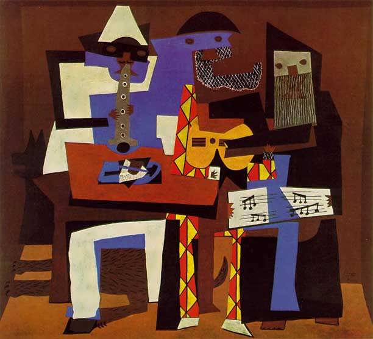

Welcome to the Gallery of Artwork
1)The Night Watch: By Rembrandt
In its native Dutch tongue, De Nachtwacht is most popularly referred to in modern culture as The Night Watch.
Using oil on canvas,Rembrandt (van Rijn)
was commissioned by a militia captain and his 17 militia guards in 1642 to paint their company,
in an effort to show off for the French Queen that would be visiting.

It is a group portrait of a company of civic guardsmen.
The primary purpose of these guardsmen was to serve as defenders of their cities.
As such,they were tasked with guarding gates, policing streets, putting out fires, and generally maintaining order throughout the city.
2)Three Musicians: By Pablo Picasso
At first glance it might look like a collage but Pablo Picasso's famous painting, Three Musicians is actually an oil painting.
Completed in 1921,
he painted two very similar paintings that are mutually referred to as Three Musicians and can be found in the
New York MoMA and the Philadelphia Museum of Art.

Three Musicians is a large painting measuring more than 2 meters wide and high. It is painted in the style of Synthetic Cubism and gives
the appearance of cut paper.
Picasso paints three musicians made of flat, brightly colored, abstract shapes in a shallow, boxlike room.
3)The Mona Lisa: By Leonardo da Vinci
Any list of Most Famous Paintings would be incomplete without the mention of the Mona Lisa by Leonardo da Vinci.
This infamous portrait of Lisa del Giocondo was completed some time between 1503-1519 and currently on display at the Musee du Louvre in Paris.

The Mona Lisa is an oil painting by Italian artist, inventor, and writer Leonardo da Vinci.Likely completed in 1506,
the piece features a portrait of a seated woman set against an imaginary landscape. In addition to being one of the most famous paintings,
it is also the most valuable.
4)The Guernica: By Pablo Picasso
Inspired by the bombing of Guernica, Spain, during the Spanish Civil War, Pablo Picasso completed this most famous piece, Guernica,in 1937.
This piece was originally commissioned by the Spanish government and intended to depict the suffering of war and ultimately stand as symbol
for peace.

One of the most famous 20th century paintings, Guernica was created by Picasso to express his outrage over the Nazi bombing of a
Basque city in northern Spain,
ordered by General Franco. Since then, this monumental black-and-white canvas has become an
international symbol of genocide committed during wartime.
5)The Girl with a Pearl Earring: By Johannes Vermeer
Considered by some to be the "Mona Lisa of the North," this enchanting painting by the Dutch artist, Johannes Vermeer,
features exactly
what the title infers - a Girl with a Peal Earring. Completed circa 1665, this piece can now be found in the
Mauritshuis Gallery in the Hague.

Girl with a Pearl Earring is Vermeer's most famous painting. It is not a portrait, but a 'tronie' –
a painting of an imaginary figure.
Tronies depict a certain type or character; in this case a girl in exotic dress,
wearing an oriental turban and an improbably large pearl in her ear
6)The Dogs Playing Poker: By Cassius Marcellus Coolidge
Commissioned by Brown & Begelow Cigars in 1903, American painter C.M. Coolidge painted 16 unforgettable images of Dogs Playing Poker
for the brand.
Spoofed many times in greeting cards and in popular culture, this series of dogs playing cards around a table is
widely recognizable and truly iconic.

Dogs Playing Poker, by Cassius Marcellus Coolidge, refers collectively to an 1894 painting,
a 1903 series of sixteen oil
paintings commissioned by Brown & Bigelow to advertise cigars, and a 1910 painting.
7)The Cafe Terrace at Night: By Vincent van Gogh
Never one for flashy titles, Cafe Terrace at Night (1888) by the ever-prolific Vincent Van Gogh,
is one of the most individual depictions of such a mundane setting.
Though Van Gogh never signed this piece,
he references his famous Cafe masterpiece in many personal documents.

Café Terrace at Night is an 1888 oil painting by the Dutch artist Vincent van Gogh. It is also known as The Cafe Terrace on the
Place du Forum, and, when first exhibited in 1891,
was entitled Coffeehouse, in the evening (Café, le soir).
Van Gogh painted Café Terrace at Night in Arles, France, in mid-September 1888.
8)The Bal du moulin de la Galette: By Pierre-Auguste Renoir
While the imagery in this painting might not be the most immediately recognizable, having sold for $78.1 million
(adjusted price of $127.4 million),
French artist Pierre-Auguste Renoires Bal du Moulin de la Galette is one of the most
expensive paintings of all time and therefore, one of the most famous.

Like other works of Renoir's early maturity, Bal du moulin de la Galette is a typically Impressionist snapshot of real life.
It shows a richness of form, a fluidity of brush stroke, and a flickering, sun-dappled light.